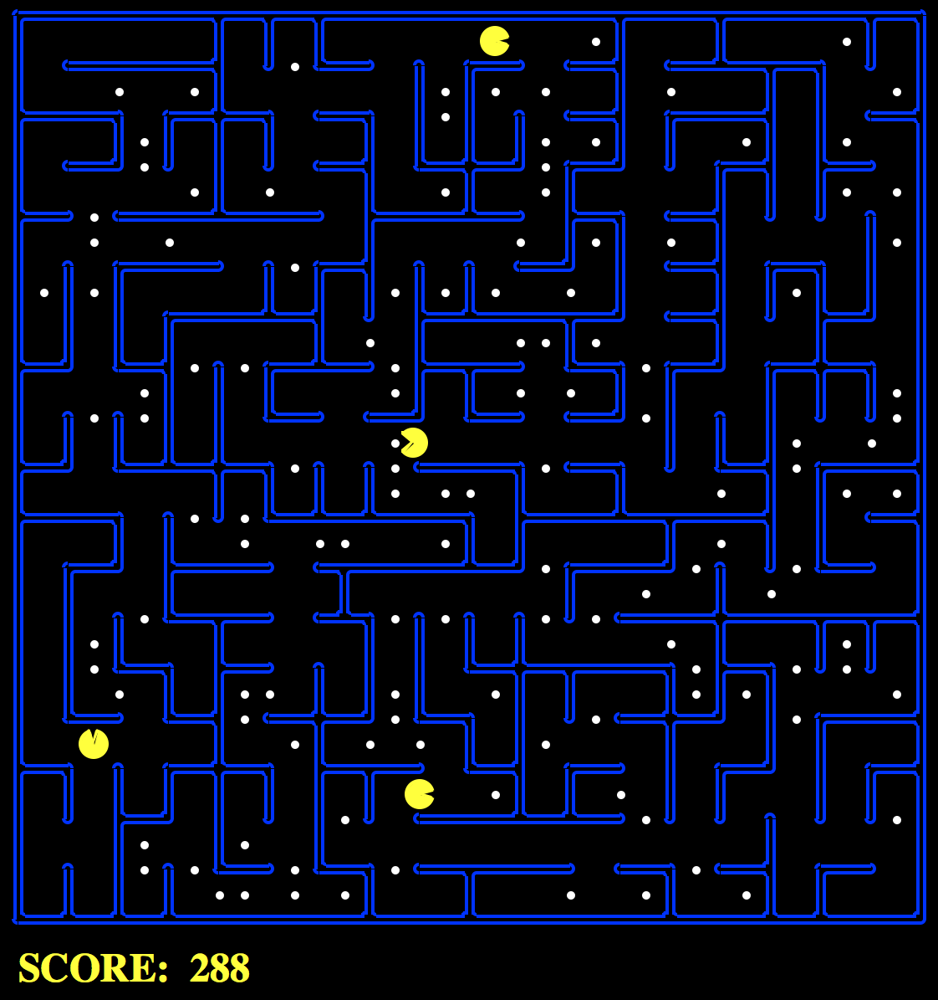

Mini-Contest 1: Multi-Agent Pacman

Table of contents
- Overview
- Extra Credit
- Quick Start Guide
- Introduction
- Rules
- Designing Agents
- Getting Started
- Submission
Overview
In this mini-contest, you will apply the search algorithms and problems implemented in Project 1 to handle more difficult scenarios that include controlling multiple pacman agents and planning under time constraints. There is room to bring your own unique ideas, and there is no single set solution. We are very much looking forward to seeing what you come up with!
Extra Credit
Extra credit points are earned on top of the 25 points available in P1. For example, if you earn 1 point of EC through the mini-contest and had a 25/25 on P1, then you’ll have 26/25 on P1. You’ll receive:
- 0.5 points per staff bot beaten in the final ranking
- 0.5 points for submitting a bot that scores more than 500 points on the leaderboard
Students that perform well in the final leaderboard will receive the following extra credit:
- 1st place: 2 points
- 2nd and 3rd place: 1.5 points
- 4th to 10th place: 1 point
Note: A good implementation of the bot in the “Quick Start Guide” below should easily score more than 500 points on the leaderboard.
Quick Start Guide
Follow these 5 easy steps to quickly get involved in the contest!
- Download the code (minicontest1.zip), unzip it, and change to the directory.
- Copy your
search.pyfrom Project 1 into the minicontest directory (replacing the blanksearch.py). - Go into
myAgents.pyand fill outfindPathToClosestDotinClosestDotAgent, andisGoalStateinAnyFoodSearchProblem. You should be able to copy your solutions from Project 1 over. - Run
python pacman.py. You should be able to see 4 pacman agents travelling around the map collecting dots. - Submit the
myAgents.pyfile to Mini-Contest 1 on Gradescope and see your ranking (don’t forget to give yourself a unique leaderboard name)! Note that it may take awhile for the autograder to run.
Important! You only need to submit myAgents.py. If you import from search.py or searchProblems.py, the autograder will use the staff version of those files.
Introduction
The base code is nearly identical to Project 1, but with some minor modifications to include support for more than one Pacman agent. You can download all the code and supporting files as a zip archive. Some key differences:
- You will control
NPacman agents on the board at a time. Your code must be able to support a multiple number of agents - There is a cost associate with how long Pacman “thinks” (compute cost). See Scoring for more details.
| Files you'll edit: | |
myAgents.py |
What will be submitted to Gradescope. Contains all of the code needed for your agent. |
| Files you might want to look at: | |
searchProblems.py |
The same code as in P1, with some slight modifications. |
search.py |
The same code as in P1. |
pacman.py |
The main file that runs Pacman games. This file describes a Pacman GameState type, which you use in this project. |
Files to Edit and Submit: You will fill and submit myAgents.py.
Evaluation: Your code will be autograded for technical correctness. Please do not change the names of any provided functions or classes within the code, or you will wreak havoc on the autograder. However, the correctness of your implementation – not the autograder’s judgements – will be the final judge of your score. If necessary, we will review and grade assignments individually to ensure that you receive due credit for your work.
Academic Dishonesty: We will be checking your code against other submissions in the class for logical redundancy. If you copy someone else’s code and submit it with minor changes, we will know. These cheat detectors are quite hard to fool, so please don’t try. We trust you all to submit your own work only; please don’t let us down. If you do, we will pursue the strongest consequences available to us.
Note on Office Hours: Because this is a contest and coming up with good strategies is key, staff will not be able to provide help with the contest in office hours. However, if you have a setup problem or similar, please make a post on Ed to get help.
Discussion: Please be careful not to post spoilers.
Rules
Layout
There are a variety of layouts in the layouts directory. Agents will be exposed to a variety of maps of different sizes and amounts of food.
Scoring
The scoring from Project 1 is maintained, with a few modifications.
Kept from Project 1:
- \(+10\) for each food pellet eaten
- \(+500\) for collecting all food pellets
Modifications:
- \(-0.4\) for each action taken (Project 1 penalized -1)
- \(-1 \cdot\) total compute used to calculate next action, in milliseconds
Each agent also starts with 100 points.
Observations
Each agent can see the entire state of the game, such as food pellet locations, all pacman locations, etc. See the GameState section of the code for more details.
Winning and Losing
Win: You win if you collect all food pellets. Your score is the current amount of points.
Lose: You lose if your score reaches zero. This can be caused by not finding pellets quickly enough, or spending too much time on compute. Your score for this game is zero. If your agent crashes, it automatically receives a score of zero.
Designing Agents
File Format
You should include your agents in a file of the same format as myAgents.py. Your agents must be completely contained in this one file, although you may use the functions in search.py.
Interface
The GameState in pacman.py should look familiar, but contains some modifications to support multiple Pacman agents. The major change to note is that many GameState methods now have an extra argument, agentIndex, which is to identify which Pacman agent it needs. For example, state.getPacmanPosition(0) will get the position of the first pacman agent. For more information, see the GameState class in pacman.py.
Agent
To get started designing your own agent, we recommend subclassing the Agent class in game.py (this has already been done by default). This provides to one important variable, self.index, which is the agentIndex of the current agent. For example, if we have 2 agents, each agent will be created with a unique index, [MyAgent(index=0), MyAgent(index=1)], that can be used when deciding on actions.
The autograder will call the createAgents function to create your team of pacmen. By default, it is set to create N identical pacmen, but you may modify the code to return a diverse team of multiple types of agents.
Restrictions
Please respect the APIs and keep all of your implementation within myAgents.py.
Getting Started
By default, the game runs with the ClosestDotAgent implemented in the Quick Start Guide. To run your own agent, change agent for the createAgents method in myAgents.py.
Run:
python pacman.py
A wealth of options are available to you:
python pacman.py --help
To run a game with your agent, do:
python pacman.py --pacman myAgents.py
Testing
The layouts folder contains all of the test cases that will be executed on the autograder. There are no hidden tests. To see how you perform on any single map, you can run:
python pacman.py --layout test1.lay
You can run the autograder by running the command below. Your score from the autograder may vary due to differences between machines or differences in staff vs. student search implementations.
python autograder.py --pacman myAgents.py
Submission
Please submit your myAgents.py file in the Mini-Contest 1 assignment on Gradescope.